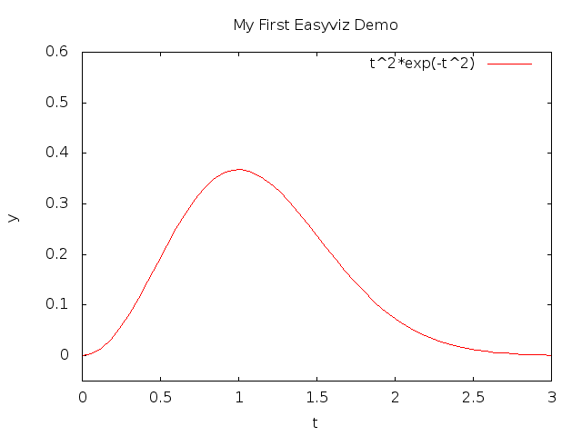
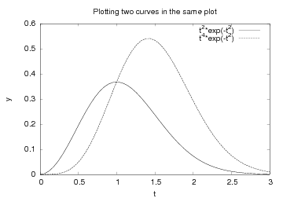
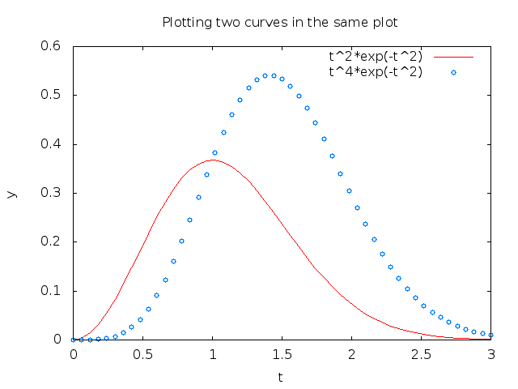
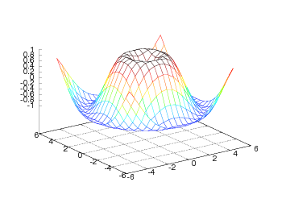
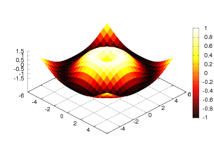
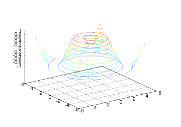
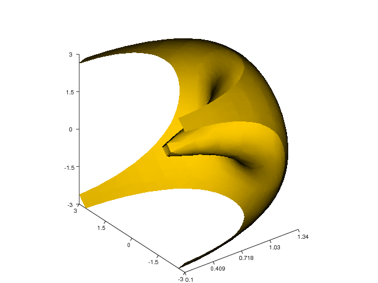
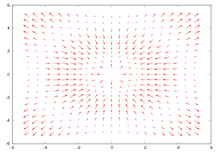
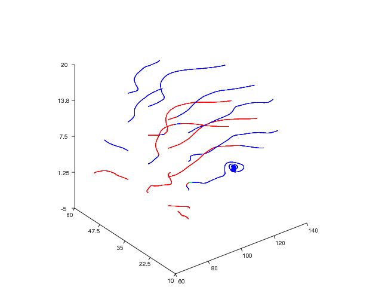

Figure 1: Default plot generated by Gnuplot.

Easyviz
Easyviz Documentation
Guiding Principles
Tutorial
A Note on Import Statements
Plotting a Single Curve
Controlling Line Styles
Decorating the Plot
Using Logarithmic Scales
Plotting Multiple Curves
Making Multiple Figures
Math Syntax in Legends and Titles
Interactive Plotting Sessions
Curves in 3D Space
Making Animations
Controlling the Aspect Ratio of Axes
Moving Plot Window
Advanced Easyviz Topics
Controlling the Backend
Importing Just Easyviz
Embedding Plots in HTML without Using Files
Setting Parameters in the Configuration File
Working with the Plotting Program Directly
Working with Axis and Figure Objects
Mathematics and LaTeX in Legends, Title, and Axis Labels
Turning Off All Plotting
Visualization of Scalar Fields
Elevated Surface Plots
Contour Plots
Pseudocolor Plots
Isosurface Plots
Volumetric Slice Plot
Visualization of Vector Fields
Quiver Plots
Stream Plots
Bar Charts
Backends
Design
Main Objects
Installation
Installing Gnuplot
Linux/Unix
Windows
Installing Matplotlib
Troubleshooting
Suddenly my old plots have markers
Can I Perform a Diagnostic Test of Easyviz?
The Plot Window Disappears Immediately
I Get Thread Errors While Plotting
I Get Strange Errors Saying Something About LaTeX
Old Programs with 2D Scalar/Vector Field Plotting Do Not Work
Check Your Backends!
Gnuplot
Matplotlib
Can I Easily Turn Off All Plotting?
How Can I Change the Type of Gnuplot Window?
How Can The Aspect Ratio of The Axes Be Controlled?
Trouble with Gnuplot and Threads
Trouble with Movie Making
I Get Thread Errors with Gnuplot
Where Can I Find Easyviz Documentation?
Grace Gives Error Messages When Calling Savefig/Hardcopy
I Cannot Find Out How My Plot Can Be Created
Easyviz is a unified interface to various packages for scientific visualization and plotting. The Easyviz interface is written in Python with the purpose of making it very easy to visualize data in Python scripts. Both curve plots and more advanced 2D/3D visualization of scalar and vector fields are supported. The Easyviz interface was designed with three ideas in mind: 1) a simple, Matlab-like syntax; 2) a unified interface to lots of visualization engines (called backends later): Gnuplot, Matplotlib, Grace, Veusz, Pmw.Blt.Graph, PyX, Matlab, VTK, VisIt, OpenDX; and 3) a minimalistic interface which offers only basic control of plots: curves, linestyles, legends, title, axis extent and names. More fine-tuning of plots can be done by invoking backend-specific commands.
Easyviz was made back in 2005/2006 so that one can postpone the choice of a particular visualization package (and its special associated syntax). This is often useful when you quickly need to visualize curves or 2D/3D fields in your Python program, but haven't really decided which plotting tool to go for. As Python is gaining popularity at universities, students are often forced to continuously switch between Matlab and Python, which is straightforward for array computing, but (previously) annoying for plotting. Easyviz was therefore also made to ease the switch between Python and Matlab. In recent years, Matplotlib has emerged as the standard plotting package for Python, and Matplotlib offers a Matlab-like interface. Many will prefer to use Matplotlib and its rich documentation directly rather than going through the more limited Easyviz interface (and having the flexibility to use other plotting engines).
If you encounter problems with using Easyviz, please visit the Troubleshooting chapter and the Installation chapter at the end of the documentation.
The present documentation is available in a number of formats:
The documentation is written in the DocOnce format and can be translated into a number of different formats (reST, Sphinx, LaTeX, HTML, XML, OpenOffice, RTF, Word, and plain untagged ASCII).First principle. Array data can be plotted with a minimal set of keystrokes using a Matlab-like syntax. A simple
t = linspace(0, 3, 51) # 51 points between 0 and 3
y = t**2*exp(-t**2)
plot(t, y)
plots the data in (the NumPy array) t versus the data in (the NumPy
array) y. If you need legends, control of the axis, as well as
additional curves, all this is obtained by the standard Matlab-style
commands
y2 = t**4*exp(-t**2)
# pick out each 4 points and add random noise:
t3 = t[::4]
y3 = y2[::4] + random.normal(loc=0, scale=0.02, size=len(t3))
plot(t, y1, 'r-')
hold('on')
plot(t, y2, 'b-')
plot(t3, y3, 'bo')
legend('t^2*exp(-t^2)', 't^4*exp(-t^2)', 'data')
title('Simple Plot Demo')
axis([0, 3, -0.05, 0.6])
xlabel('t')
ylabel('y')
show()
hardcopy('tmp0.eps') # this one can be included in LaTeX
hardcopy('tmp0.png') # this one can be included in HTML
Easyviz also allows these additional function calls to be executed
as a part of the plot call:
plot(t, y1, 'r-', t, y2, 'b-', t3, y3, 'bo',
legend=('t^2*exp(-t^2)', 't^4*exp(-t^2)', 'data'),
title='Simple Plot Demo',
axis=(0, 3, -0.05, 0.6),
xlabel='t', ylabel='y',
hardcopy='tmp1.eps',
show=True)
hardcopy('tmp0.png')
A scalar function \( f(x,y) \) may be visualized as an elevated surface with colors using these commands:
x = linspace(-2, 2, 41) # 41 point on [-2, 2]
xv, yv = ndgrid(x, x) # define a 2D grid with points (xv,yv)
values = f(xv, yv) # function values
surfc(xv, yv, values,
shading='interp',
clevels=15,
clabels='on',
hidden='on',
show=True)
Second princple. Easyviz is just a unified interface to other plotting packages that can be called from Python. Such plotting packages are referred to as backends. Several backends are supported: Gnuplot, Matplotlib, Grace (Xmgr), Veusz, Pmw.Blt.Graph, PyX, Matlab, VTK, VisIt, OpenDX. In other words, scripts that use Easyviz commands only, can work with a variety of backends, depending on what you have installed on the machine in question and what quality of the plots you demand. For example, switching from Gnuplot to Matplotlib is trivial.
Scripts with Easyviz commands will most probably run anywhere since at least the Gnuplot package can always be installed right away on any platform. In practice this means that when you write a script to automate investigation of a scientific problem, you can always quickly plot your data with Easyviz (i.e., Matlab-like) commands and postpone to marry any specific plotting tool. Most likely, the choice of plotting backend can remain flexible. This will also allow old scripts to work with new fancy plotting packages in the future if Easyviz backends are written for those packages.
Third principle. The Easyviz interface is minimalistic, aimed at rapid prototyping of plots. This makes the Easyviz code easy to read and extend (e.g., with new backends). If you need more sophisticated plotting, like controlling tickmarks, inserting annotations, etc., you must grab the backend object and use the backend-specific syntax to fine-tune the plot. The idea is that you can get away with Easyviz and a plotting package-independent script "95 percent" of the time - only now and then there will be demand for package-dependent code for fine-tuning and customization of figures.
These three principles and the Easyviz implementation make simple things simple and unified, and complicated things are not more complicated than they would otherwise be. You can always start out with the simple commands - and jump to complicated fine-tuning only when strictly needed.
This tutorial starts with plotting a single curve with a simple
plot(x,y) command. Then we add a legend, axis labels, a title, etc.
Thereafter we show how multiple curves are plotted together. We also
explain how line styles and axis range can be controlled. The
next topic deals with animations and making movie files. More advanced
subjects, such as fine tuning of plots (using plotting package-specific
commands) and working with Axis and Figure objects, close the curve
plotting part of the tutorial.
Various methods for visualization of scalar fields in 2D and 3D are treated next, before we show how 2D and 3D vector fields can be handled.
The recommended standard import of numpy
and matplotlib in programs reads:
import numpy as np
import matplotlib.pyplot as plt
This import ensures that all functionality from different packages are
prefixed by a short form of the package name. This convention has,
from a computer science perspective, many advantages as one sees
clearly where functionality comes from. However, convincing
scientists with extensive Matlab, Fortran, or C++ experience to switch
to Python can be hard when mathematical formulas are full of np.
prefixes and all plotting commands are decorated with an "extra"
plt. The developers of Easyviz think it is a major point to have
Python code as close to Matlab and standard mathematical syntax as
possible. Therefore, examples in this manual employ the "star
import":
from scitools.std import *
This statement imports the Easyviz plotting commands and also performs
from numpy import *. Hence, mathematical functions like sin and
log are available and work for arrays, as in Matlab, and the plotting
commands are the same as those in Matlab. This type of import statement
is similar to the popular
from matplotlib.pylab import *
among Matplotlib users (although not promoted by Matplotlib developers).
The primary additional feature of the
scitools.std import is the possibility to choose among many different
backends for plotting, where Matplotlib is one of the options.
Let us plot the curve \( y = t^2\exp(-t^2) \) for
\( t \) values between 0 and 3. First we generate equally spaced
coordinates for \( t \), say 31 values (30 intervals). Then we compute the
corresponding \( y \) values at these points, before we call the
plot(t,y) command to make the curve plot. Here is the complete
program:
from scitools.std import *
def f(t):
return t**2*exp(-t**2)
t = linspace(0, 3, 31) # 31 points between 0 and 3
y = zeros(len(t)) # allocate y with float elements
for i in xrange(len(t)):
y[i] = f(t[i])
plot(t, y)
show() # optional
If you have problems running this file, make sure you have installed SciTools and one or more plotting programs, see the chapter Installation.
The first line imports all of SciTools and Easyviz that can be handy
to have when doing scientific computations. This includes everything
from numpy (from numpy import *),
all Easyviz plotting commands, some modules (sys, math), and
all of SciPy (from scipy import *) if SciPy is installed.
In the program above, we first
pre-allocate the y array and fill it with values, element by
element, in a Python loop. Alternatively, we may operate
on the whole t array at once, which yields faster and shorter code:
from scitools.std import *
def f(t):
return t**2*exp(-t**2)
t = linspace(0, 3, 31) # 31 points between 0 and 3
y = f(t) # compute all f values at once
plot(t, y)
show() # optional
The f function can also be skipped, if desired, so that we can write
directly
y = t**2*exp(-t**2)
To include the plot in electronic documents, we need a hardcopy of the
figure in PostScript, PNG, or another image format. The savefig
command produces files with images in various formats:
savefig('tmp1.eps') # produce PostScript
savefig('tmp1.png') # produce PNG
savefig('tmp1.pdf') # produce PDF
savefig('tmp1.svg') # produce SVG (not supported in all backends)
An alternative name for savefig is hardcopy:
hardcopy('tmp1.eps') # produce PostScript
hardcopy('tmp1.png') # produce PNG
hardcopy('tmp1.pdf') # produce PDF
The filename extension determines the format: .ps or
.eps for PostScript, .png for PNG, .pdf for PDF, and .svg for SVG.
Figures 1 and 2 display the resulting
image file with the plot, as generated
with the Gnuplot and Matplotlib plotting packages, respectively.
With show(False)
we can suppress the plot from being shown at the screen, which is
useful when creating a large number of figure files in programs.
Figure 1: Default plot generated by Gnuplot.
Figure 2: Default plot generated by Matplotlib.

On some platforms, some backends may result in a plot that is shown in just a fraction of a second on the screen before the plot window disappears (using the Gnuplot backend on Windows machines or using the Matplotlib backend constitute two examples). To make the window stay on the screen, add
raw_input('Press the Return key to quit: ')
at the end of the program. The plot window is killed when the program terminates, and this statement postpones the termination until the user hits the Return key.
By default, Easyviz plots a curve with a solid line of thickness 1 and
markers at each data point. If the number of data points exceeds 61,
just 15 equally spaced markers are drawn to avoid cluttering the plot.
This default behavior is
inspired by the usual needs to include markers to
distinguish multiple curves plots, especially if image files are to
appear in black and white in printed reports. However, the line style
and markers can easily be controlled by adding a string s after the y
argument: plot(x, y, s). The syntax of the string s is inspired by
Matlab. For example, r- means a red solid line of unit thickness and
no markers
(see Figure 3), r-- means a red dashed line, r-o
means a red solid line with circles as markers at each data point,
r--o is the same except that the line is dashed. In general, if s
is clms, the first character c is the color, l is the line type,
m is the marker type, and s is the size of the line and marker. A
blue line with thickness 6 and cross symbols as markers of size 6 is
specified by b-x6. The effect of the given line thickness and
symbol size depends on the underlying plotting program. One can omit
the line type or color: yo specifies yellow circles and - gives
solid line of thickness 1 and default color .
Figure 3: Red solid line.

The different available line colors include
'y''m''c''r''g''b''w''k''-''--'':''-.''+''o''*''.''x''s''d''^''v''>''<''p''h'Noneplot function. Just type help(plot)
in an interactive Python shell or invoke pydoc with
scitools.easyviz.plot. This tutorial is available
through pydoc scitools.easyviz.
We remark that in the Gnuplot program all the different line types are drawn as solid lines on the screen. The hardcopy chooses automatically different line types (solid, dashed, etc.) and not in accordance with the line type specification.
The \( x \) and \( y \) axes in curve plots should have labels, here \( t \) and
\( y \), respectively. Also, the curve should be identified with a label,
or legend as it is often called. A title above the plot is also
common. In addition, we may want to control the extent of the axes (although
most plotting programs will automatically adjust the axes to the range of the
data).
All such things are easily added after the plot command:
plot(x, y, 'r-')
xlabel('t')
ylabel('y')
legend('t^2*exp(-t^2)')
axis([0, 3, -0.05, 0.6]) # [tmin, tmax, ymin, ymax]
title('My First Easyviz Demo')
This syntax is inspired by Matlab to make the switch between
Easyviz and Matlab almost trivial.
Easyviz has also introduced a more "Pythonic" plot command where
all the plot properties can be set at once:
plot(t, y, 'r-',
xlabel='t',
ylabel='y',
legend='t^2*exp(-t^2)',
axis=[0, 3, -0.05, 0.6],
title='My First Easyviz Demo',
savefig='tmp1.eps', # or hardcopy='tmp1.eps'
show=True)
With show=False one can avoid the plot window on the screen and
just make the hardcopy. This feature is particularly useful if
one generates a large number of separate figures in the program.
The keyword savefig can be replaced by hardcopy if desired.
Note that we in the curve legend write t square as t^2 (LaTeX style)
rather than t**2 (program style). Whichever form you choose is up to
you, but the LaTeX form sometimes looks better in some plotting
programs (Matplotlib and Gnuplot are two examples).
See Figure 4 for what the modified
plot looks like and how t^2 is typeset in Gnuplot.
Figure 4: A single curve with label, title, and axes adjusted.

Sometimes logarithmic scales are need on the \( x \) or \( y \) axis. This is
easily specified by replacing plot(x,y) by loglog(x,y), semilogx(x,y),
or semilogy(x,y) for the three cases of logarithmic scales on both axes,
on the \( x \) axis only, or on the \( y \) axis only. A complete
example, displayed in Figure 5, reads
def f(t):
return exp(-t**2)
t = linspace(0, 3, 51) # 51 points between 0 and 3
y = f(t)
semilogy(t, y, 'r-2')
xlabel('t')
ylabel('y')
legend('exp(-t^2)')
title('Logarithmic scale on the y axis')
Figure 5: Logarithmic scale on one axis.

The specification of
logarithmic scales can also be done through keyword arguments to the
plot function: log='xy', log='x', or log='y', which should
be self-explaining syntax. The following call produces the same plot
as above.
plot(t, y, 'r-2',
log='y',
xlabel='t',
ylabel='y',
legend='exp(-t^2)',
title='Logarithmic scale on the y axis',
savefig='tmp1.png',
show=True)
A common plotting task is to compare two or more curves, which
requires multiple curves to be drawn in the same plot.
Suppose we want to plot the two functions \( f_1(t)=t^2\exp(-t^2) \)
and \( f_2(t)=t^4\exp(-t^2) \). If we write two plot commands after
each other, two separate plots will be made. To make the second
plot command draw the curve in the first plot, we need to
issue a hold('on') command. Alternatively, we can provide all
data in a single plot command. A complete program illustrates the
different approaches:
from scitools.std import * # for curve plotting
def f1(t):
return t**2*exp(-t**2)
def f2(t):
return t**2*f1(t)
t = linspace(0, 3, 51)
y1 = f1(t)
y2 = f2(t)
# Matlab-style syntax
plot(t, y1)
hold('on')
plot(t, y2)
xlabel('t')
ylabel('y')
legend('t^2*exp(-t^2)', 't^4*exp(-t^2)')
title('Plotting two curves in the same plot')
savefig('tmp2.eps') # or hardcopy('tmp2.eps')
# Alternative "Pythonic" style
plot(t, y1, t, y2, xlabel='t', ylabel='y',
legend=('t^2*exp(-t^2)', 't^4*exp(-t^2)'),
title='Plotting two curves in the same plot',
savefig='tmp2.eps')
The sequence of the multiple legends is such that the first legend corresponds to the first curve, the second legend to the second curve, and so on. The visual result appears in Figures 6 and 7.
Doing a hold('off') makes the next plot command create a new
plot in the same window. This new plot just erases the previous curves.
Figure 6: Two curves in the same plot, PNG file produced by Gnuplot.

Figure 7: Two curves in the same plot, PostScript file produced by Gnuplot.

With the keyword argrument grid=True to plot we can add a
grid, which is frequently used when plotting curves (see
Figure 8).
Figure 8: Curves with a grid.

The default location of the legends is dependent on the backend
(some have a fixed location, like Gnuplot, and some try to find
the most optimal location, like Matplotlib). One can control
the location by the loc keyword to the legend function, e.g.,
legend('t^2*exp(-t^2)', 't^4*exp(-t^2)', loc='upper left')
The most popular values are upper right, upper left, lower left,
and lower right, depending on the shape of the curves and extend
of the axes. The keyword argument fancybox draws a box around
the legends if True, otherwise no box is drawn. The corresponding
keywords for the plot function are legend_loc and legend_fancybox:
plot(t, y1, t, y2, xlabel='t', ylabel='y',
legend=('t^2*exp(-t^2)', 't^4*exp(-t^2)'),
legend_loc=`upper left`, legend_fancybox=True,
axis=[0, 4, -0.1, 0.8],
title='Plotting two curves in the same plot',
savefig='tmp2.eps')
The loc and fancybox specifications work (at present)
with Gnuplot and Matplotlib only.
Figure 9: A figure with legends placed to the upper left with a box frame.

The legend function also accepts a list of legends instead of
the legends as separate positional arguments. This allows an overlapping
syntax between Matplotlib and Easyviz so that the same code can apply
either of the packages (however, Matplotlib's keywords to
plot, like label and linewidth, are not recognized so not all
syntax is interchangable).
The hold command either adds a new curve or replaces old curve(s) by
new ones. Often one wants to make multiple figures in a program,
realized as multiple windows on the screen. The figure() command
creates a new figure:
x = linspace(-2, 2, 81)
y1 = sin(pi*x)*exp(-0.5*x**2)
plot(x, y1)
figure() # separate plot window
y2 = sin(pi*x/2)*exp(-0.5*x**2)
plot(x, y2)
figure() # yet another plot window
y3 = sin(pi*x/4)*exp(-0.5*x**2)
plot(x, y3)
More information in the figure command is found later on under the
heading Working with Axis and Figure Objects.
When plotting multiple curves in the same plot, the individual curves get distinct default line styles, depending on the program that is used to produce the curve (and the settings for this program). It might well happen that you get a green and a red curve (which is bad for a significant portion of the male population). Therefore, we often want to control the line style in detail when plotting multiple curves.
Say we want the first curve (t and y1) to be drawn as a red solid
line (r-) and the second curve (t and y2) as blue circles (bo) at the
discrete data points:
plot(t, y1, 'r-')
hold('on')
plot(t, y2, 'bo')
# or
plot(t, y1, 'r-', t, y2, 'bo')
The resulting effect can be seen in Figure 10.
Figure 10: Two curves in the same plot, with controlled line styles.

Assume now that we want to plot the blue circles at every 4 points only.
We can grab every 4 points out of the t array by using an appropriate
slice: t2 = t[::4]. Note that the first colon means the range from the
first to the last data point, while the second colon separates this
range from the stride, i.e., how many points we should "jump over"
when we pick out a set of values of the array.
from scitools.std import *
def f1(t):
return t**2*exp(-t**2)
def f2(t):
return t**2*f1(t)
t = linspace(0, 3, 51)
y1 = f1(t)
t2 = t[::4]
y2 = f2(t2)
plot(t, y1, 'r-6', t2, y2, 'bo3',
xlabel='t', ylabel='y',
axis=[0, 4, -0.1, 0.6],
legend=('t^2*exp(-t^2)', 't^4*exp(-t^2)'),
title='Plotting two curves in the same plot',
hardcopy='tmp2.eps')
In this plot we also adjust the size of the line and the circles by
adding an integer: r-6 means a red line with thickness 6 and bo5
means red circles with size 5. The effect of the given line thickness
and symbol size depends on the underlying plotting program. For
the Gnuplot program one can view the effect in Figure 11.
Figure 11: Circles at every 4 points and extended line thickness (6) and circle size (3).

Another Example. Let us extend the previous example with a third curve where the data points are slightly randomly distributed around the \( f_2(t) \) curve:
from scitools.std import *
def f1(t):
return t**2*exp(-t**2)
def f2(t):
return t**2*f1(t)
t = linspace(0, 3, 51)
y1 = f1(t)
y2 = f2(t)
# Pick out each 4 points and add random noise
t3 = t[::4] # slice, stride 4
random.seed(11) # fix random sequence
noise = random.normal(loc=0, scale=0.02, size=len(t3))
y3 = y2[::4] + noise
plot(t, y1, 'r-')
hold('on')
plot(t, y2, 'ks-') # black solid line with squares at data points
plot(t3, y3, 'bo')
legend('t^2*exp(-t^2)', 't^4*exp(-t^2)', 'data')
title('Simple Plot Demo')
axis([0, 3, -0.05, 0.6])
xlabel('t')
ylabel('y')
show()
savefig('tmp3.eps') # or hardcopy
savefig('tmp3.png') # or hardcopy
The plot is shown in Figure 12.
Figure 12: A plot with three curves.

Minimalistic Typing. When exploring mathematics in the interactive Python shell, most of us are interested in the quickest possible commands. Here is an example of minimalistic syntax for comparing the two sample functions we have used in the previous examples:
t = linspace(0, 3, 51)
plot(t, t**2*exp(-t**2), t, t**4*exp(-t**2))
Text. A text can be placed at a point \( (x,y) \) using the call
text(x, y, 'Some text')
More Examples.
The examples in this tutorial, as well as
additional examples, can be found in the examples directory in the
root directory of the SciTools source code tree.
Some backends understand some mathematical syntax. Easyviz accepts LaTeX-style syntax and translates it to something appropriate for the background in question. As a rule of thumb, write plain LaTeX syntax if you need mathematical symbols and expressions in legends and titles. Matplotlib will show the result in an excellent way, Gnuplot PostScript output will handle super- and subscripts as well as greek letters. All other backends will strip off backslashes, dollar signs, curly braces, qand other annoying LaTeX syntax. Normally, power expressions with double multiplication symbols are replaced by a hat.
All the Easyviz commands can of course be issued in an interactive
Python session. The only thing to comment is that the plot command
returns a result:
>>> t = linspace(0, 3, 51)
>>> plot(t, t**2*exp(-t**2))
[<scitools.easyviz.common.Line object at 0xb5727f6c>]
Most users will just ignore this output line.
All Easyviz commands that produce a plot return an object reflecting the
particular type of plot. The plot command returns a list of
Line objects, one for each curve in the plot. These Line
objects can be invoked to see, for instance, the value of different
parameters in the plot:
>>> line, = plot(x, y, 'b')
>>> getp(line)
{'description': '',
'dims': (4, 1, 1),
'legend': '',
'linecolor': 'b',
'pointsize': 1.0,
...
Such output is mostly of interest to advanced users.
Easyviz also supports curves in 3D space through the plot3 function.
It works as plot, except that it accepts three coordinates:
plot3(x, y, z, 'b-'). Here is an example of how to
plot the parametric curve
$$
\begin{align*}
x(t) &= (2t+2)\sin(10t),\\
y(t) &= (2t+2)\cos(10t),\\
z(t) &= t,
\end{align*}
$$
for \( t\in [-5,5] \). The corresponding code reads
from scitools.std import *
t = linspace(-5, 5, 501)
x = (2+t**2)*sin(10*t)
y = (2+t**2)*cos(10*t)
z = t
plot3(x, y, z, 'r-')
grid('on')
xlabel('x(t)')
ylabel('y(t)')
zlabel('z(t)')
title('plot3 example')
Figure 13 shows the resulting plot.
The file examples/plot3_demo.py contains this and more examples.
Figure 13: Example of curve in 3D space.

A sequence of plots can be combined into an animation and stored in a movie file. First we need to generate a series of hardcopies, i.e., plots stored in files. Thereafter we must use a tool to combine the individual plot files into a movie file.
Example.
The function
\( f(x; m, s) = (2\pi)^{-1/2}s^{-1}\exp{\left[-{1\over2}\left({x-m\over s}\right)^2\right]} \)
is known as the Gaussian function or the probability density function
of the normal (or Gaussian) distribution. This bell-shaped function is
"wide" for large \( s \) and "peak-formed" for small \( s \), see Figure
14. The function is symmetric around \( x=m \) (\( m=0 \) in the
figure). Our goal is to make an animation where we see how this
function evolves as \( s \) is decreased. In Python we implement the
formula above as a function f(x, m, s).
Figure 14: Different shapes of a Gaussian function.

The animation is created by varying \( s \) in a loop and for each \( s \)
issue a plot command. A moving curve is then visible on the screen.
One can also make a movie file that can be played as any other
computer movie using a standard movie player. To this end, each plot
is saved to a file, and all the files are combined together using some
suitable tool, which is reached through the movie function in
Easyviz. All necessary steps will be apparent in the complete program
below, but before diving into the code we need to comment upon a
couple of issues with setting up the plot command for animations.
The underlying plotting program will normally adjust the \( y \) axis to the maximum and minimum values of the curve if we do not specify the axis ranges explicitly. For an animation such automatic axis adjustment is misleading - the axis ranges must be fixed to avoid a jumping axis. The relevant values for the axis range is the minimum and maximum value of \( f \). The minimum value is zero, while the maximum value appears for \( x=m \) and increases with decreasing \( s \). The range of the \( y \) axis must therefore be \( [0,f(m; m, \min s)] \).
The function \( f \) is defined for all \( -\infty < x < \infty \), but the function value is very small already \( 3s \) away from \( x=m \). We may therefore limit the \( x \) coordinates to \( [m-3s,m+3s] \).
Now we are ready to take a look at the complete code for animating how the Gaussian function evolves as the \( s \) parameter is decreased from 2 to 0.2:
from scitools.std import *
import time
def f(x, m, s):
return (1.0/(sqrt(2*pi)*s))*exp(-0.5*((x-m)/s)**2)
m = 0
s_start = 2
s_stop = 0.2
s_values = linspace(s_start, s_stop, 30)
x = linspace(m -3*s_start, m + 3*s_start, 1000)
# f is max for x=m; smaller s gives larger max value
max_f = f(m, m, s_stop)
# Show the movie on the screen
# and make hardcopies of frames simultaneously
counter = 0
for s in s_values:
y = f(x, m, s)
plot(x, y, axis=[x[0], x[-1], -0.1, max_f],
xlabel='x', ylabel='f', legend='s=%4.2f' % s,
hardcopy='tmp%04d.png' % counter)
counter += 1
#time.sleep(0.2) # can insert a pause to control movie speed
# Make movie file the simplest possible way
movie('tmp*.png')
Note that the \( s \) values are decreasing (linspace handles this
automatically if the start value is greater than the stop value).
Also note that we, simply because we think it is visually more
attractive, let the \( y \) axis go from -0.1 although the \( f \) function is
always greater than zero.
Remarks on Filenames.
For each frame (plot) in the movie we store the plot in a file. The
different files need different names and an easy way of referring to
the set of files in right order. We therefore suggest to use filenames
of the form tmp0001.png, tmp0002.png, tmp0003.png, etc. The
printf format 04d pads the integers with zeros such that 1 becomes
0001, 13 becomes 0013 and so on. The expression tmp*.png will
now expand (by an alphabetic sort) to a list of all files in proper
order. Without the padding with zeros, i.e., names of the form
tmp1.png, tmp2.png, ..., tmp12.png, etc., the alphabetic order
will give a wrong sequence of frames in the movie. For instance,
tmp12.png will appear before tmp2.png.
Note that the names of plot files specified when making hardopies must
be consistent with the specification of names in the call to movie.
Typically, one applies a Unix wildcard notation in the call to
movie, say plotfile*.png, where the asterisk will match any set of
characters. When specifying hardcopies, we must then use a filename
that is consistent with plotfile*.png, that is, the filename must
start with plotfile and end with .png, but in between
these two parts we are free to construct (e.g.) a frame number padded
with zeros.
We recommend to always remove previously generated plot files before
a new set of files is made. Otherwise, the movie may get old and new
files mixed up. The following Python code removes all files
of the form tmp*.png:
import glob, os
for filename in glob.glob('tmp*.png'):
os.remove(filename)
These code lines should be inserted at the beginning of the code example above. Alternatively, one may store all plotfiles in a subfolder and later delete the subfolder. Here is a suitable code segment:
import shutil, os
subdir = 'temp' # name of subfolder for plot files
if os.path.isdir(subdir): # does the subfolder already exist?
shutil.rmtree(subdir) # delete the whole folder
os.mkdir(subdir) # make new subfolder
os.chdir(subdir) # move to subfolder
# ...perform all the plotting...
# ...make movie...
os.chdir(os.pardir) # optional: move up to parent folder
Movie Formats.
Having a set of (e.g.) tmp*.png files, one can simply generate a movie by
a movie('tmp*.png') call. The format of the movie is determined by
which video encoders that are installed on the computer. The movie
function runs through a list of encoders (convert, mencoder,
ffmpeg mpeg_encode, ppmtompeg, mpeg2enc, html) and choses the
first one which is installed. The fall back encoder html actually
does not create a video file, but makes insetad an HTML file that can
play the series of hardcopies made (tmp*.png, for instance).
When no filename is given to the movie function, the output file
with the movie has filestem movie and extension depending on the
video format and the encoder used. For example, if convert was used
to create an animated GIF file, the default output file is movie.gif.
Similarly, movie.avi is in AVI format, movie.mpeg is in MPEG format,
and so forth.
You can get complete control of the movie format and the name of the
movie file by supplying the encoder and output_file arguments to
the movie function. This is the recommended use. Here is an
example on generating an animated GIF file tmpmovie.gif with
the convert program from the ImageMagick software suite:
movie('tmp_*.png', encoder='convert', fps=2,
output_file='tmpmovie.gif')
This call requires ImageMagick to be installed on the machine. The
argument fps stands for frames per second so here the speed of the
movie is slow in that there is a delay of half a second between each
frame (image file). To view the animated GIF file, one can use the
animate program (also from ImageMagick) and give the movie file as
command-line argument. One can alternatively put the GIF file in a web
page in an IMG tag such that a browser automatically displays the
movie.
Making an HTML file that can play the movie in a web browser is carried out by the call
movie('tmp_*.png', encoder='html', fps=10,
output_file='tmpmovie.html')
Just load tmpmovie.html into a browser (e.g., run firefox tmpmovie.html
from the command line).
An AVI movie can be generated by the call
movie('tmp_*.png', encoder='ffmpeg', fps=4,
output_file='tmpmovie.avi',
Alternatively, we may generate an MPEG movie using
the ppmtompeg encoder from the Netpbm suite of
image manipulation tools:
movie('tmp_*.png', encoder='ppmtompeg', fps=24,
output_file='tmpmovie.mpeg',
The ppmtompeg supports only a few (high) frame rates.
The next sample call to movie uses the Mencoder tool and specifies
some additional arguments (video codec, video bitrate, and the
quantization scale):
movie('tmp_*.png', encoder='mencoder', fps=24,
output_file='tmpmovie.mpeg',
vcodec='mpeg2video', vbitrate=2400, qscale=4)
Here is yet another example:
movie('tmp_*.png', encoder='ffmpeg',
output_file='tmpmovie1c.mpeg', vodec='mpeg2video')
The file examples/movie_demo1.py that comes with the SciTools source
code generates frames in a movie and creates movie files in many formats.
Playing movie files can be done by a lot of programs. Windows Media
Player is a default choice on Windows machines. On Unix, a variety
of tools can be used. For animated GIF files the animate program
from the ImageMagick suite is suitable, or one can simply
show the file in a web page with the HTML command
<img src="tmpmovie.gif">. AVI and MPEG files can be played by,
for example, the
myplayer, vlc, or totem programs.
Making Movies in Batch.
Sometimes it is desired to carry out
large numbers of computer experiments and create movies in each
individual experiments. Then one probably does not want to have
the screen full of movie windows. To turn off showing the movie
on the screen while creating the individual frames, just
give the show=False keyword argument to the plot function.
All hardcopies and the movies are then made in batch, which also
might speed up the program since rendering graphics on the screen
is avoided.
By default, Gnuplot, Matplotlib and other plotting packages automatically calculate suitable physical sizes of the axis in the plotting window. However, sometimes one wants to control this, i.e., impose a certain ratio of the physical extent of the axis.
In the gnuplot and matplotlib
backends, we set daspectmode=manual and
daspect=[r,1,1], where r is the ratio of the y-axis length to
the x-axis length
(r equal to 1 gives a square plot area). For example,
plot(x, y, 'r-',
axis=[0, 1, 0, 1],
daspect=[1,1,1],
daspectmode='manual')
Note that one should always use axis and set axes limits explicitly
when prescribing the aspect ratio.
Suppose the x-axis goes from 0 to 20 and the y-axis from -2 to 2.
Often we want the units on the axes to have the same length, i.e.,
the x-axis should be five times as long as the y-axis in this example.
This is accomplished by daspect=[0.2,1,1]).
Alternatively, one can apply daspectmode='equal' (which means
equal physical units on the axis).
Here is an example which demonstrates various aspects of setting the aspect ratio:
from scitools.std import *
n = 20 # no of periods of a sine function
r = 80 # resolution of each period
x = linspace(0, n, r*n + 1)
amplitude = 1 + sin(2*pi*0.05*x)
y = amplitude*sin(2*pi*x)
# x-axis goes from 0 to 20, y-axis from -2 to 2.
subplot(2, 1, 1)
plot(x, y,
axis=[x[0], x[-1], y.min(), y.max()],
daspectmode='equal',
title='daspectmode=equal',
)
subplot(2, 1, 2)
plot(x, y,
axis=[x[0], x[-1], y.min(), y.max()],
daspect=[0.5,1,1],
daspectmode='manual',
title='daspectmode=manual, daspect=[0.5,1,1]',
)
figure()
plot(x, y,
axis=[x[0], x[-1], y.min(), y.max()],
daspect=[1,1,1],
daspectmode='manual',
title='daspectmode=manual, daspect=[1,1,1]',
)
show()
raw_input()
When calculating long time series, it may be desirable to have a
moving plot window that follows the time series. The module
MovingPlotWindow was made for this purpose. There are three
different modes of this tool, where each mode moves the window
in a certain way. With mode set as continuous movement,
the plot window moves with the curves continuously.
With mode set as continuous drawing, the curves are drawn
from left to right in the plot window, as an animation (one step
at a time). When the curves reach the right border of the plot window,
the window (or more correctly, the x-axis) is moved in a jump
to the right so that the curves are coming in from the left border
again. With mode set as jumps the curves are plotted directly
in the window and shown for a specified period of time (the pause
parameter), then the axis jump one window to the right, and the
curves are displayed in this (time) window. The jumps mode is
well suited for quickly browsing a time series. The continuous
drawing mode is aimed at studing the "tip" of the time series
as they are computed, and continuous movement is a kind of
default choice for most purposes. Running the module file gives
a demo of the three modes.
Below is an example of how to compute a time series by finite differences and comparing this series with the exact solutions. For large times, there is a fequency discrepancy that one wants to investigate.
def _demo(I, k, dt, T, mode='continuous movement'):
"""
Solve u' = -k**2*u, u(0)=I, u'(0)=0 by a finite difference
method with time steps dt, from t=0 to t=T.
"""
if dt > 2./k:
print 'Unstable scheme'
N = int(round(T/float(dt)))
u = zeros(N+1)
t = linspace(0, T, N+1)
umin = -1.2*I
umax = -umin
period = 2*pi/k # period of the oscillations
plot_manager = MovingPlotWindow(8*period, dt, yaxis=[umin, umax],
mode=mode)
u[0] = I
u[1] = u[0] - 0.5*dt**2*k**2*u[0]
for n in range(1,N):
u[n+1] = 2*u[n] - u[n-1] - dt**2*k**2*u[n]
if plot_manager.plot(n):
s = plot_manager.first_index_in_plot
plot(t[s:n+2], u[s:n+2], 'r-',
t[s:n+2], I*cos(k*t)[s:n+2], 'b-',
axis=plot_manager.axis(),
title="Solution of u'' + k^2 u = 0 for t=%6.3f (mode: %s)" \
% (t[n+1], mode))
plot_manager.update(n)
An appropriate import statement is
from scitools.MovingPlotWindow import MovingPlotWindow
The information in the previous sections aims at being sufficient for
the daily work with plotting curves. Sometimes, however, one wants to
fine-control the plot or how Easyviz behaves. First, we explain how to
set the backend. Second, we tell how to speed up the
from scitools.std import * statement. Third, we show how to operate with
the plotting program directly and using plotting program-specific
advanced features. Fourth, we explain how the user can grab Figure
and Axis objects that Easyviz produces "behind the curtain".
The Easyviz backend can either be set in a configuration file (see "Setting Parameters in the Configuration File" below), by importing a special backend in the program, or by adding a command-line option
--SCITOOLS_easyviz_backend name
where name is the name of the backend: gnuplot, vtk,
matplotlib, etc. Which backend you choose depends on what you have
available on your computer system and what kind of plotting
functionality you want.
An alternative method is to import a specific backend in a program. Instead
of the from scitools.std import * statement one writes
from numpy import *
from scitools.easyviz.gnuplot_ import * # work with Gnuplot
# or
from scitools.easyviz.vtk_ import * # work with VTK
Note the trailing underscore in the module names for the various backends.
The following program prints a list of the names of the available backends on your computer system:
from scitools.std import *
backends = available_backends()
print 'Available backends:', backends
There will be quite some output explaining the missing backends and what must be installed to use these backends. Be prepared for exceptions and error messages too.
The from scitools.std import * statement imports many modules and packages:
from numpy import *
from scitools.numpyutils import * # some convenience functions
from numpy.lib.scimath import *
from scipy import * # if scipy is installed
import sys, operator, math
from scitools.StringFunction import StringFunction
from glob import glob
The scipy import can take some time and lead to slow start-up of plot
scripts. A more minimalistic import for curve plotting is
from scitools.easyviz import *
from numpy import *
Alternatively, one can edit the SciTools configuration file as explained below in the section "Setting Parameters in the Configuration File".
Many discourage the use of "star import" as shown above. For example, the standard import of Numerical Python in all of its documentation is
import numpy as np
A similar import for SciTools and Easyviz is
import scitools.std as st
import numpy as np
Although np functions are important into the namespace of st in
this case, we recommend to distinguish the packages when using a prefix.
A typical plotting example will then read
x = np.linspace(0, 3, 51)
y = x**2*np.exp(-x)
st.plot(x, y, 'r-', title="Plot")
The corresponding syntax for the
minimalistic import of scitools.easyviz and numpy reads
import scitools.easyviz as ev
import numpy as np
Web applications may prefer to get the plot as a string from the
plotting software and embed this string directly in HTML. This is
easy: if the filename for the savefig command contains just the
extension, say .png, and the backend supports storing the plot
in a string in PNG format, the string is returned. Otherwise, just
None is returned. Any any case, a filename of .png implies
that the plot is also store in the file tmp.png. The only
backend that can return the plot as a string is matplotlib.
Here is a recipe on how to create a plot as a string in PNG and SVG format and embed the strings directly in HTML:
from scitools.std import plot, savefig, linspace
x = linspace(0, 1, 10)
plot(x, y)
figdata_svg = savefig('.svg') # create tmp.svg anyway
figdata_png = savefig('.png') # create tmp.ong anyway
if figdata_svg is not None and figdata_png is not None:
# Turn PNG data to base64 format
import base64
figdata_png = base64.b64encode(figdata_png)
f = open('tmp.html', 'w')
f.write("""
Embedded SVG XML code:<br>
%(figdata_svg)s
<br>
Embedded PNG data:<br>
<img src="data:image/png;base64,%(figdata_png)s" width=500><br>
Using img tag for SVG file:<br>
<img alt="Embedded SVG image" src="tmp.svg" width=500><br>
Using img tag for PNG file:<br>
<img alt="Embedded PNG image" src="tmp.png" width=500><br>
Using object embedding:<br>
<object data="tmp.svg" type="image/svg+xml"></object>
""" % vars())
f.close()
The examples/plot2r.py file contains a demo of this kind where the
HTML page can be viewed in a browser.
Easyviz is a subpackage of SciTools, and the the SciTools
configuration file, called scitools.cfg has several sections
([easyviz], [gnuplot], and [matplotlib]) where parameters
controlling the behavior of plotting can be set. For example, the
backend for Easyviz can be controlled with the backend parameter:
[easyviz]
backend = vtk
Similarly, Matplotlib's use of LaTeX can be controlled by a boolean parameter:
[matplotlib]
text.usetex = <bool> false
The text <bool> indicates that this is a parameter with a boolean
A configuration file with name .scitools.cfg file can be placed in
the current working folder, thereby affecting plots made in this
folder, or it can be located in the user's home folder, which will
affect all plotting sessions for the user in question. There is also a
common SciTools config file scitools.cfg for the whole site, located
in the directory where the scitools package is installed. It is
recommended to copy the scitools.cfg, either from installation or
the SciTools source folder lib/scitools, to .scitools.cfg
in your home folder. Then you can easily control the Easyviz backend
and other paramteres by editing your local .scitools.cfg file.
Parameters set in the configuration file can also be set directly on the command line when running a program. The name of the command-line option is
--SCITOOLS_sectionname_parametername
where sectionname is the name of the section in the file
and parametername is the name of the
parameter. For example, setting the backend parameter in the
[easyviz] section by
--SCITOOLS_easyviz_backend gnuplot
Here is an example where we use Matplotlib as backend, turn on the use of LaTeX in Matplotlib, and avoid the potentially slow import of SciPy:
python myprogram.py --SCITOOLS_easyviz_backend matplotlib \
--SCITOOLS_matplotlib_text.usetex true --SCITOOLS_scipy_load no
Easyviz supports just the most common plotting commands, typically the commands you use "95 percent" of the time when exploring curves. Various plotting packages have lots of additional commands for diverse advanced features. When Easyviz does not have a command that supports a particular feature, one can grab the Python object that communicates with the underlying plotting program (the "backend") and work with this object directly, using plotting program-specific command syntax. Let us illustrate this principle with an example where we add a text and an arrow in the plot, see Figure 15.
Figure 15: Illustration of a text and an arrow using Gnuplot-specific commands.

Easyviz does not support arrows at arbitrary places inside the plot,
but Gnuplot does. If we use Gnuplot as backend, we may grab the
Gnuplot object and issue Gnuplot commands to this object
directly. Here is an example of the typical recipe, written after the
core of the plot is made in the ordinary (plotting
program-independent) way:
if backend == 'gnuplot':
g = get_backend()
# g is a Gnuplot object, work with Gnuplot commands directly:
g('set label "global maximum" at 0.1,0.5 font "Times,18"')
g('set arrow from 0.5,0.48 to 0.98,0.37 linewidth 2')
g.refresh()
g.hardcopy('tmp2.eps') # make new hardcopy
g.reset() # new plot
data = Gnuplot.Data(t, t**3*exp(-t), with_='points 3 3',
title='t**3*exp(-t)')
func = Gnuplot.Func('t**4*exp(-t)', title='t**4*exp(-t)')
g('set tics border font "Courier,14"')
g.plot(func, data)
For the available features and the syntax of commands, we refer to
the Gnuplot manual and the demo.py program in Python interface to
Gnuplot. Note that one must call g.hardcopy to save the figure
to file. A call to savefig or hardcopy remakes the plot, but
without the special calls g('...') so the label and arrow are
left out of the hardcopy in the example above.
Here is an example with Matplotlib:
if backend == 'matplotlib':
pyplot = get_backend()
# Work with standard matplotlib.pyplot functions
The files grab_backend*.py in the examples folder of the SciTools
source code contain many examples on how to do backend-specific
operations, especially with Matplotlib. Note that after having issued
calls via the pyplot object, one must apply pyplot.savefig to
correctly save the plot (a plain savefig or hardcopy remakes the
plot without the features inserted by the pyplot object).
Here are some useful links to documentation of various plotting packages:
Easyviz supports the concept of Axis objects, as in Matlab. The Axis object represents a set of axes, with curves drawn in the associated coordinate system. A figure is the complete physical plot. One may have several axes in one figure, each axis representing a subplot. One may also have several figures, represented by different windows on the screen or separate hardcopies.
Users with Matlab experience may prefer to set axis
labels, ranges, and the title using an Axis object instead of
providing the information in separate commands or as part of a plot
command. The gca (get current axis) command returns an Axis
object, whose set method can be used to set axis properties:
plot(t, y1, 'r-', t, y2, 'bo',
legend=('t^2*exp(-t^2)', 't^4*exp(-t^2)'),
savefig='tmp2.eps')
ax = gca() # get current Axis object
ax.setp(xlabel='t', ylabel='y',
axis=[0, 4, -0.1, 0.6],
title='Plotting two curves in the same plot')
show() # show the plot again after ax.setp actions
The figure() call makes a new figure, i.e., a
new window with curve plots. Figures are numbered as 1, 2, and so on.
The command figure(3) sets the current figure object to figure number
3.
Suppose we want to plot our y1 and y2 data in two separate windows.
We need in this case to work with two Figure objects:
plot(t, y1, 'r-', xlabel='t', ylabel='y',
axis=[0, 4, -0.1, 0.6])
figure() # new figure
plot(t, y2, 'bo', xlabel='t', ylabel='y')
We may now go back to the first figure (with the y1 data) and
set a title and legends in this plot, show the plot, and make a PostScript
version of the plot:
figure(1) # go back to first figure
title('One curve')
legend('t^2*exp(-t^2)')
show()
savefig('tmp2_1.eps')
We can also adjust figure 2:
figure(2) # go to second figure
title('Another curve')
savefig('tmp2_2.eps')
show()
The current Figure object is reached by gcf (get current figure),
and the dump method dumps the internal parameters in the Figure
object:
fig = gcf(); print fig.dump()
These parameters may be of interest for troubleshooting when Easyviz does not produce what you expect.
Let us then make a third figure with two plots, or more precisely, two
axes: one with y1 data and one with y2 data.
Easyviz has a command subplot(r,c,a) for creating r
rows and c columns and set the current axis to axis number a.
In the present case subplot(2,1,1) sets the current axis to
the first set of axis in a "table" with two rows and one column.
Here is the code for this third figure:
figure() # new, third figure
# Plot y1 and y2 as two axis in the same figure
subplot(2, 1, 1)
plot(t, y1, xlabel='t', ylabel='y')
subplot(2, 1, 2)
plot(t, y2, xlabel='t', ylabel='y')
title('A figure with two plots')
show()
savefig('tmp2_3.eps')
Note: The Gnuplot backend will overwrite the tickmarks on the \( y \) axis if two or more curves in the same subplot have significantly different variations in \( y \) direction. To avoid this cluttering of tickmarks, set the axes extent explicitly.
If we need to place an axis at an arbitrary position in the figure, we must use the command
ax = axes(viewport=[left, bottom, width, height])
The four parameteres left, bottom, width, height
are location values between 0 and 1 ((0,0) is the lower-left corner
and (1,1) is the upper-right corner). However, this might be a bit
different in the different backends (see the documentation for the
backend in question).
Some plotting packages support nicely formatted mathematics as axis labels, in legends, and in the figure title. For example, Matplotlib accepts standard LaTeX syntax, while Gnuplot, when saving figures to PostScript format, supports greek letters, sub- and super-scripts, exponentials, etc. Different plotting engines (backends) will require mathematics in legends, titles, and labels to be formatted differently.
examples/math_text.py tests different syntax in legends,
axis labels, and titles. Running this script with
--SCITOOLS_easyviz_backend X for different values of X
(gnuplot, matplotlib, grace, pyx, etc.) produces plots
that one can examine to see various formats treat mathematics with and
without LaTeX syntax.
If it is important to have Easyviz code that works with several backends, one can apply a little if-else test:
from scitools.std import *
...
if backend == 'gnuplot':
title_screen = 'mu=0.5, alpha=sum(i=1 to n) tau_i^2'
title_eps = r'\mu=0.5, \alpha=sum(i=1 to n) \tau_i^2'
elif backend == 'matplotlib':
title_screen = title_eps = \
r'$mu=0.5$, $\alpha=\sum_{i=1}^n \tau_i^2$'
else:
title_screen = title_eps = 'mu=0.5, alpha=sum(i=1 to n) tau_i^2'
plot(...)
...
title(title_screen)
show()
title(title_eps)
savefig('myplot.eps')
Sometimes, especially during debugging or when trying out a large-scale experiment, it is nice to turn off all plotting on the screen and all making of hardcopies. This is easily done by
turn_off_plotting(globals())
All the plot functions now "do nothing" (actually they are DoNothing
objects from scitools.misc).
A scalar field is a function from space or space-time to a real value. This real value typically reflects a scalar physical parameter at every point in space (or in space and time). One example is temperature, which is a scalar quantity defined everywhere in space and time. In a visualization context, we work with discrete scalar fields that are defined on a grid. Each point in the grid is then associated with a scalar value.
There are several ways to visualize a scalar field in Easyviz. Both two- and three-dimensional scalar fields are supported. In two dimensions (2D) we can create elevated surface plots, contour plots, and pseudocolor plots, while in three dimensions (3D) we can create isosurface plots, volumetric slice plots, and contour slice plots.
To create elevated surface plots we can use either the surf or the
mesh command. Both commands have the same syntax, but the mesh
command creates a wireframe mesh while the surf command creates a
solid colored surface.
Our examples will make use of the scalar field \( f(x,y) = \sin r \), where \( r \) is the distance in the plane from the origin, i.e., \( r=\sqrt{x^2+y^2} \). The \( x \) and \( y \) values in our 2D domain lie between -5 and 5.
The example first creates the necessary data arrays for 2D scalar
field plotting: the coordinates in each direction, extensions of these
arrays to form a ndgrid, and the function values. The latter array
is computed in a vectorized operation which requires the extended
coordinate arrays from the ndgrid function. The mesh command
can then produce the plot with a syntax that mirrors the simplicity of
the plot command for curves:
x = y = linspace(-5, 5, 21)
xv, yv = ndgrid(x, y)
values = sin(sqrt(xv**2 + yv**2))
h = mesh(xv, yv, values)
The mesh command returns a reference to a new Surface object, here
stored in a variable h. This reference can be used to set or get
properties in the object at a later stage if needed. The resulting
plot can be seen in Figure 16.
We remark that the computations in the previous example are vectorized. The corresponding scalar computations using a double loop read
values = zeros(x.size, y.size)
for i in xrange(x.size):
for j in xrange(y.size):
values[i,j] = sin(sqrt(x[i]**2 + y[j]**2))
However, for the mesh command to work, we need the vectorized
extensions xv and yv of x and y.
Figure 16: Result of the mesh command for plotting a 2D scalar field (Gnuplot backend).

The surf command employs the same syntax, but results in a different
plot (see Figure 17):
surf(xv, yv, values)
Figure 17: Result of the surf command (Gnuplot backend).

The surf command offers many possibilities to adjust the resulting plot:
setp(interactive=False)
surf(xv, yv, values)
shading('flat')
colorbar()
colormap(hot())
axis([-6,6,-6,6,-1.5,1.5])
view(35,45)
show()
Here we have specified a flat shading model, added a color bar, changed
the color map to hot, set some suitable axis values, and changed the
view point (the view takes two arguments: the azimuthal rotation and
the elevation, both given in degrees).
The same plot can also be accomplished with one single, compound
statement (just as Easyviz offers for the plot command):
surf(xv, yv, values,
shading='flat',
colorbar='on',
colormap=hot(),
axis=[-6,6,-6,6,-1.5,1.5],
view=[35,45])
Figure 18 displays the result.
Figure 18: Result of an extended surf command (Gnuplot backend).

A contour plot is another useful technique for visualizing scalar fields. The primary examples on contour plots from everyday life is the level curves on geographical maps, reflecting the height of the terrain. Mathematically, a contour line, also called an isoline, is defined as the implicit curve \( f(x,y)=c \). The contour levels \( c \) are normally uniformly distributed between the extreme values of the function \( f \) (this is the case in a map: the height difference between two contour lines is constant), but in scientific visualization it is sometimes useful to use a few carefully selected \( c \) values to illustrate particular features of a scalar field.
In Easyviz, there are several commands for creating different kinds of contour plots:
contour: Draw a standard contour plot, i.e., lines in the plane.contourf: Draw a filled 2D contour plot, where the space between
the contour lines is filled with colors.contour3: Same as contour, but the curves are drawn at their
corresponding height levels in 3D space.meshc: Works in the same way as mesh except that a
contour plot is drawn in the plane beneath the mesh.surfc: Same as meshc except that a solid surface is
drawn instead of a wireframe mesh.contour command, assuming that
we already have computed the xv, yv, and values
arrays as shown in our first example on scalar field plotting.
The basic syntax follows that of mesh and surf:
contour(xv, yv, values)
By default, five uniformly spaced contour level curves are drawn, see Figure 19.
Figure 19: Result of the simplest possible contour command (Gnuplot backend).

The number of levels in a contour plot can be specified with an additional argument:
n = 15 # number of desired contour levels
contour(xv, yv, values, n)
The result can be seen in Figure 20.
Figure 20: A contour plot with 15 contour levels (Gnuplot backend).

Sometimes one wants contour levels that are not equidistant or not distributed throughout the range of the scalar field. Individual contour levels to be drawn can easily be specified as a list:
levels = [-0.5, 0.1, 0.3, 0.9]
contour(xv, yv, values, levels, clabels='on')
Now, the levels list specify the values of the contour levels, and
the clabel keyword allows labeling of the level values in the plot.
Figure 21 shows the result. We remark that the
Gnuplot backend colors the contour lines and places the contour values
and corresponding colors beside the plot. Figures that are reproduced
in black and white only can then be hard to analyze. Other backends
may draw the contour lines in black and annotate each line with the
corresponding contour level value. Such plots are better suited for
being displayed in black and white.
Figure 21: Four individually specified contour levels (Gnuplot backend).

The contourf command,
contourf(xv, yv, values)
gives a filled contour plot as shown in Figure 22. Only the Matplotlib and VTK backends currently supports filled contour plots.
Figure 22: Filled contour plot created by the contourf command (VTK backend).

The contour lines can be "lifted up" in 3D space, as shown in Figure
23, using the contour3 command:
contour3(xv, yv, values, 15)
Figure 23: Example on the contour3 command for elevated contour levels (Gnuplot backend).

Finally, we show a simple example illustrating the meshc and surfc
commands:
meshc(xv, yv, values,
clevels=10,
colormap=hot(),
grid='off')
figure()
surfc(xv, yv, values,
clevels=15,
colormap=hsv(),
grid='off',
view=(30,40))
The resulting plots are displayed in Figures 24 and 25.
Figure 24: Wireframe mesh with contours at the bottom (Gnuplot backend).

Figure 25: Surface plot with contours (Gnuplot backend).

Another way of visualizing a 2D scalar field in Easyviz is the
pcolor command. This command creates a pseudocolor plot, which is a
flat surface viewed from above. The simplest form of this command
follows the syntax of the other commands:
pcolor(xv, yv, values)
We can set the color shading in a pseudocolor plot either by giving
the shading keyword argument to pcolor or by calling the shading
command. The color shading is specified by a string that can be either
'faceted' (default), 'flat', or 'interp' (interpolated). The Gnuplot and
Matplotlib backends support 'faceted' and 'flat' only, while the
VTK backend supports all of them.
Figure 26: Pseudocolor plot (Gnuplot backend).

For 3D scalar fields, isosurfaces or contour surfaces constitute the counterpart to contour
lines or isolines for 2D scalar fields. An isosurface connects points in
a scalar field with (approximately) the same scalar value and is
mathematically defined by the implicit equation \( f(x,y,z)=c \). In Easyviz,
isosurfaces are created with the isosurface command. We will
demonstrate this command using 3D scalar field data from the flow
function. This function, also found in Matlab,
generates fluid flow data. Our first isosurface visualization example
then looks as follows:
x, y, z, v = flow() # generate fluid-flow data
setp(interactive=False)
h = isosurface(x,y,z,v,-3)
h.setp(opacity=0.5)
shading('interp')
daspect([1,1,1])
view(3)
axis('tight')
show()
After creating some scalar volume data with the flow function, we
create an isosurface with the isovalue \( -3 \). The isosurface is then
set a bit transparent (opacity=0.5) before we specify the shading
model and the view point. We also set the data aspect ratio to be
equal in all directions with the daspect command. The resulting
plot is shown in Figure 27. We remark that the
Gnuplot backend does not support 3D scalar fields and hence not
isosurfaces.
Figure 27: Isosurface plot (VTK backend).

Here is another example that demonstrates the isosurface command
(again using the flow function):
x, y, z, v = flow()
setp(interactive=False)
h = isosurface(x,y,z,v,0)
shading('interp')
daspect([1,4,4])
view([-65,20])
axis('tight')
show()
Figure 28 shows the resulting plot.
Figure 28: Another isosurface plot (VTK backend).

Another way of visualizing scalar volume data is by using the slice_
command (since the name slice is already taken by a built-in
function in Python for array slicing, we have followed the standard
Python convention and added a trailing underscore to the name in
Easyviz - slice_ is thus the counterpart to the Matlab function
slice.). This command draws orthogonal slice planes through a
given volumetric data set. Here is an example on how to use the
slice_ command:
x, y, z = ndgrid(seq(-2,2,.2), seq(-2,2,.25), seq(-2,2,.16),
sparse=True)
v = x*exp(-x**2 - y**2 - z**2)
xslice = [-1.2, .8, 2]
yslice = 2
zslice = [-2, 0]
slice_(x, y, z, v, xslice, yslice, zslice,
colormap=hsv(), grid='off')
Note that we here use the SciTools function seq for specifying a
uniform partitioning of an interval - the linspace function from
numpy could equally well be used. The first three arguments in the
slice_ call are the grid points in the \( x \), \( y \), and \( z \)
directions. The fourth argument is the scalar field defined on-top of
the grid. The next three arguments defines either slice planes in the
three space directions or a surface plane (currently not working). In
this example we have created 6 slice planes: Three at the \( x \) axis (at
\( x=-1.2 \), \( x=0.8 \), and \( x=2 \)), one at the \( y \) axis (at \( y=2 \)), and two
at the \( z \) axis (at \( z=-2 \) and \( z=0.0 \)). The result is presented in
Figure 29.
Figure 29: Slice plot where the \( x \) axis is sliced at -1.2, 0.8, and 2, the \( y \) axis is sliced at 2, and the \( z \) axis is sliced at -2 and 0.0 (VTK backend).

Contours in Slice Planes.
With the contourslice command we can create contour plots
in planes aligned with the coordinate axes. Here is an example
using 3D scalar field data from the flow function:
x, y, z, v = flow()
setp(interactive=False)
h = contourslice(x, y, z, v, seq(1,9), [], [0], linspace(-8,2,10))
axis([0, 10, -3, 3, -3, 3])
daspect([1, 1, 1])
ax = gca()
ax.setp(fgcolor=(1,1,1), bgcolor=(0,0,0))
box('on')
view(3)
show()
The first four arguments given to contourslice in this example are
the extended coordinates of the grid (x, y, z) and the 3D scalar
field values in the volume (v). The next three arguments defines the
slice planes in which we want to draw contour lines. In this
particular example we have specified two contour plots in the planes
\( x=1,2,\dots,9 \), none in \( y=\hbox{const} \) planes (empty
list) , and one contour plot in the plane \( z=0 \). The last argument to
contourslice is optional, it can be either an integer specifying the
number of contour lines (the default is five) or, as in the current
example, a list specifying the level curves. Running the set of
commands results in the plot shown in Figure 30.
Figure 30: Contours in slice planes (VTK backend).

Here is another example where we draw contour slices from a three-dimensional MRI data set:
import scipy.io
mri = scipy.io.loadmat('mri_matlab_v6.mat')
D = mri['D']
image_num = 8
# Displaying a 2D Contour Slice
contourslice(D, [], [], image_num, daspect=[1,1,1], indexing='xy')
The MRI data set is loaded from the file mri_matlab_v6.mat with the
aid from the loadmat function available in the io module in the
SciPy package. We then create a 2D contour slice plot with one slice
in the plane \( z=8 \). Figure 31 displays the result.
Figure 31: Contour slice plot of a 3D MRI data set (VTK backend).

A vector field is a function from space or space-time to a vector value, where the number of components in the vector corresponds to the number of space dimensions. Primary examples on vector fields are the gradient of a scalar field; or velocity, displacement, or force in continuum physics.
In Easyviz, a vector field can be visualized either by a quiver (arrow) plot or by various kinds of stream plots like stream lines, stream ribbons, and stream tubes. Below we will look closer at each of these visualization techniques.
The quiver and quiver3 commands draw arrows to illustrate vector
values (length and direction) at discrete points. As the names
indicate, quiver is for 2D vector fields in the plane and quiver3
plots vectors in 3D space. The basic usage of the quiver command
goes as follows:
x = y = linspace(-5, 5, 21)
xv, yv = ndgrid(x, y, sparse=False)
values = sin(sqrt(xv**2 + yv**2))
uv, vv = gradient(values)
quiver(xv, yv, uv, vv)
Our vector field in this example is simply the gradient of the scalar
field used to illustrate the commands for 2D scalar field plotting.
The gradient function computes the gradient using finite difference
approximations. The result is a vector field with components uv and
vv in the \( x \) and \( y \) directions, respectively. The grid points and
the vector components are passed as arguments to quiver, which in
turn produces the plot in Figure 32.
Figure 32: Velocity vector plot (Gnuplot backend).

The arrows in a quiver plot are automatically scaled to fit within the grid. If we want to control the length of the arrows, we can pass an additional argument to scale the default lengths:
scale = 2
quiver(xv, yv, uv, vv, scale)
This value of scale will thus stretch the vectors to their double length.
To turn off the automatic scaling, we can set the scale value to zero.
Quiver plots are often used in combination with other plotting commands such as pseudocolor plots or contour plots, since this may help to get a better perception of a given set of data. Here is an example demonstrating this principle for a simple scalar field, where we plot the field values as colors and add vectors to illustrate the associated gradient field:
xv, yv = ndgrid(linspace(-5,5,101), linspace(-5,5,101))
values = sin(sqrt(xv**2 + yv**2))
pcolor(xv, yv, values, shading='interp')
# Create a coarser grid for the gradient field
xv, yv = ndgrid(linspace(-5,5,21), linspace(-5,5,21))
values = sin(sqrt(xv**2 + yv**2))
uv, vv = gradient(values)
hold('on')
quiver(xv, yv, uv, vv, 'filled', 'k', axis=[-6,6,-6,6])
figure(2)
contour(xv, yv, values, 15)
hold('on')
quiver(xv, yv, uv, vv, axis=[-6,6,-6,6])
The resulting plots can be seen in Figure 33 and 34.
Figure 33: Combined quiver and pseudocolor plot (VTK backend).

Figure 34: Combined quiver and pseudocolor plot (VTK backend).

Visualization of 3D vector fields by arrows at grid points can be done
with the quiver3 command. At the time of this writing, only the VTK
backend supports 3D quiver plots. A simple example of plotting the
"radius vector field" \( \vec v = (x,y,z) \) is given next:
x = y = z = linspace(-3,3,4)
xv, yv, zv = ndgrid(x, y, z, sparse=False)
uv = xv
vv = yv
wv = zv
quiver3(xv, yv, zv, uv, vv, wv, 'filled', 'r', axis=[-7,7,-7,7,-7,7])
The strings 'filled' and 'r' are optional and makes the arrows
become filled
and red, respectively. The resulting plot is presented in Figure
35.
Figure 35: 3D quiver plot (VTK backend).

Stream plots constitute an alternative to arrow plots for visualizing
vector fields. The stream plot commands currently available in
Easyviz are streamline, streamtube, and streamribbon. Stream
lines are lines aligned with the vector field, i.e., the vectors are
tangents to the streamlines. Stream tubes are similar, but now the
surfaces of thin tubes are aligned with the vectors. Stream ribbons
are also similar: thin sheets are aligned with the vectors. The latter
type of visualization is also known as stream or flow sheets. In the
near future, Matlab commands such as streamslice and
streamparticles might also be implemented.
We start with an example on how to use the streamline command. In
this example (and in the following examples) we will use the wind
data set that is included with Matlab. This data set represents air
currents over a region of North America and is suitable for testing
the different stream plot commands. The following commands will load
the wind data set and then draw some stream lines from it:
import scipy.io # needed to load binary .mat-files
# Load the wind data set and create variables
wind = scipy.io.loadmat('wind.mat')
x = wind['x']
y = wind['y']
z = wind['z']
u = wind['u']
v = wind['v']
w = wind['w']
# Create starting points for the stream lines
sx, sy, sz = ndgrid([80]*4, seq(20,50,10), seq(0,15,5),
sparse=False)
# Draw stream lines
streamline(x, y, z, u, v, w, sx, sy, sz,
view=3, axis=[60,140,10,60,-5,20])
The wind data set is stored in a binary .mat-file called
wind.mat. To load the data in this file into Python, we can use the
loadmat function which is available through the io module in
SciPy. Using the loadmat function on the wind.mat-file returns a
Python dictionary (called wind in the current example) containing the NumPy
arrays x, y, z, u, v, and w. The arrays u, v, and w
are the 3D vector data, while the arrays x, y, and z defines the
(3D extended) coordinates for the associated grid. The data arrays in
the dictionary wind are then stored in seperate variables for easier
access later.
Before we call the streamline command we must set up some starting
point coordinates for the stream lines. In this example, we have used
the ndgrid command to define the starting points with the line:
sx, sy, sz = ndgrid([80]*4, seq(20,50,10), seq(0,15,5))
This command defines starting points which all lie on \( x=80 \),
\( y=20,30,40,50 \), and \( z=0,5,10,15 \). We now have all the data we need
for calling the streamline command. The first six arguments to the
streamline command are the grid coordinates (x,y,z) and the 3D
vector data (u,v,w), while the next three arguments are the starting
points which we defined with the ndgrid command above. The
resulting plot is presented in Figure 36.
Figure 36: Stream line plot (Vtk backend).

The next example demonstrates the streamtube command applied to the
same wind data set:
streamtube(x, y, z, u, v, w, sx, sy, sz,
daspect=[1,1,1],
view=3,
axis='tight',
shading='interp')
The arrays sx, sy, and sz are the same as in the previous
example and defines the starting positions for the center lines of the
tubes. The resulting plot is presented in Figure
37.
Figure 37: Stream tubes (Vtk backend).

Finally, we illustrate the streamribbon command:
streamribbon(x, y, z, u, v, w, sx, sy, sz,
ribbonwidth=5,
daspect=[1,1,1],
view=3,
axis='tight',
shading='interp')
Figure 38 shows the resulting stream ribbons.
Figure 38: Stream ribbons (VTK backend).

Easyviz also supports a unified interface to simple bar charts. Here is a simple example for displaying tabular values, with one bar for each data point:
from scitools.std import *
languages = ['C', 'Java', 'C++', 'PHP', 'VB', 'C#', 'Python',
'Perl', 'JavaScript']
ratings = [18, 18, 9.7, 9.7, 6.4, 4.4, 4.2, 3.6, 2.5]
bar(ratings, 'r',
barticks=languages,
ylabel='Ratings in percent (TIOBE Index, April 2010)',
axis=[-1, len(languages), 0, 20],
hardcopy='tmp.eps')
The bar chart illustrates the data in the ratings list. These data
correspond to the names in languages.
Figure 39: A simple bar chart illustrating the popularity of common programming languages.

One may display groups of bars. The data can then be put in a matrix, where rows (1st index) correspond to the groups the columns to the data within one group:
data = [[ 0.15416284 0.7400497 0.26331502]
[ 0.53373939 0.01457496 0.91874701]
[ 0.90071485 0.03342143 0.95694934]
[ 0.13720932 0.28382835 0.60608318]]
bar(data,
barticks=['group 1', 'group 2', 'group 3', 'group 4'],
legend=['bar 1', 'bar 2', 'bar 3'],
axis=[-1, data.shape[0], 0, 1.3],
ylabel='Normalized CPU time',
title='Bars from a matrix, now with more annotations')
When the names of the groups (barticks) are quite long, rotating them
90 degrees is preferable, and this is done by the keyword
argument rotated_barticks=True.
The demo program in examples/bar_demo.py contains additional examples
and features.
As we have mentioned earlier, Easyviz is just a unified interface to other plotting packages, which we refer to as backends. We have currently implemented backends for Gnuplot, Grace, OpenDX, Matlab, Matplotlib, Pmw.Blt, Veusz, VisIt, and VTK. Some are more early in developement than others, like the backends for OpenDx and VisIt.
Because of limitations in many of the plotting packages, not all features in Easyviz are supported by each of the backends. Gnuplot has (at the time of this writing) no support for visualization of 3D vector fields, so this is of course not available in the Gnuplot backend either.
Some supported visualization programs are commented on below.
Gnuplot.
Gnuplot is a command-driven interactive or scripted
plotting utility that works on a wide variety of platforms. Gnuplot
supports many types of plots in both 2D and 3D, including curve plots,
contour plots, vector plots, and surface plots. 3D scalar and vector
fields are not supported. To access Gnuplot from Python and send NumPy
arrays to Gnuplot, we use the Python module Gnuplot.
Matlab. Many view Matlab as the de facto standard for making curves and plots of 2D scalar/vector fields.
Matplotlib. Matplotlib is now quickly gaining wide popularity in the scientific Python community and has established itself as the de facto standard for curve plotting and 2D contour and (recently) surface plotting. The interface to Matplotlib is Matlab-insipired, and different backends are used to create the plots: Gtk, Tk, WxWidgets and many more. (Since Easyviz and Matplotlib haver very similar Matlab-style syntax, Easyviz is just a thin layer on top of Matplotlib to enable Matplotlib to be used with the Easyviz unified syntax.) Matplotlib is now a comprehensive package with lots of tuning possibilities that Easyviz does not support - but one can fetch the underlying Matplotlib from Easyviz and call all the functionality of Matplotlib directly.
Grace. Grace is a highly interactive curve plotting program on the Unix/X11 platform which has been popular for many years. It does not support 2D or 3D scalar or vector fields. However, it has a lot of functionality for computing with curves and adjusting/fine-tuning plots interactively.
PyX. PyX is a Python package for the creation of PostScript and PDF files. It combines an abstraction of the PostScript drawing model with a TeX/LaTeX interface. Complex tasks like 2d and 3d plots in publication-ready quality are built out of these primitives.
Pmw.Blt.Graph. Pmw (Python Mega Widgets) extends the Tkinter package with more sophisticated widgets, included an interactive widget for curve plotting. This widget is based on the BLT package (an extension of Tk written in C). The BLT backend offers currenlty only basic plotting functionality.
Veusz.
From http://home.gna.org/veusz
VTK. VTK (Visualization ToolKit) is a package primarily aimed at visualizing 2D and 3D scalar and vector fields by a range of techniques. VTK is used to achieve 2D and 3D visualizations of the same type as Matlab offers. However, VTK can do much more (although the Easyviz commands are restricted to what is typically offered by Matlab).
All code that is common to all backends is gathered together in a file
called common.py. For each backend there is a separate file where
the backend dependent code is stored. For example, code that are
specific for the Gnuplot backend, are stored in a file called
gnuplot_.py and code specific for the VTK backend are stored in
vtk_.py (note the final underscore in the stem of the filename - all
backend files have this underscore).
Each backend is a subclass of class BaseClass. The BaseClass code
is found in common.py and contains all common code for the backends.
Basically, a backend class extends BaseClass with
rendering capabilities and backend-specific functionality.
The most important method that needs to be implemented in the backend
is the _replot method, which updates the backend and the plot after a
change in the data. Another important method for the backend class is
the hardcopy method, which stores an image of the data in the current
figure to a file.
Inspired by Matlab, the Easyviz interface is organized around figures and
axes. A figure contains an arbitrary number of axes, and the axes can
be placed in arbitrary positions in the figure window. Each figure appears
in a separate window on the screen. The current figure is accessed by
the gcf() call. Similarly, the current axes are accessed by calling
gca().
It is
natural to have one class for figures and one for axes. Class Figure
contains a dictionary with one (default) or more Axis objects in
addition to several properties such as figure width and height. Class Axis
has another dictionary with the plot data as well as lots of
parameters for colors, text fonts, labels on the axes, hidden surfaces, etc.
For example, when adding an
elevated surface to the current figure, this surface will be
appended to a list in the current Axis object.
Optionally one can add the surface to another Axis
object by specifying the Axis instance as an argument.
All the objects that are to be plotted in a figure such as curves,
surfaces, vectors, and so on, are stored in repsectively classes. An
elevated surface, for instance, is represented as an instance of class
Surface. All such classes are subclasses of
PlotProperties. Besides being the base class of all objects that can
be plotted in a figure
(Line,
Surface,
Contours,
VelocityVectors,
Streams,
Volume),
class PlotProperties also stores various properties that are common
to all objects in a figure. Examples include line properties, material
properties, storage arrays for x and y values for Line objects,
and x, y, and z values for 3D objects such as Volume.
The classes mentioned above, i.e., BaseClass with subclasses, class
PlotProperties with subclasses, as well as class Figure and class
Axis constitute the most important classes in the Easyviz interface.
Other less important classes are Camera, Light, Colorbar, and
MaterialProperties.
All the classes in common.py follows a convention where class parameters
are set by a setp method and read by a getp method. For
example, we can set the limits on the \( x \) axis by using the setp
method in a Axis instance:
ax = gca() # get current axis
ax.setp(xmin=-2, xmax=2)
To extract the values of these limits we can write
xmin = ax.getp('xmin')
xmax = ax.getp('xmax')
Normal use will seldom involve setp and getp functions, since most
users will apply the Matlab-inspired interface and set, e.g., the
limits by
xlim([-2,2])
Easyviz comes with the SciTools package, so to install Easyviz, you must install SciTools, which is available from Google code.
If you run a Linux system that allows installation from Debian repositories (Ubuntu is such a Linux system), you get SciTools, NumPy, and Gnuplot with one Unix command:
Unix> sudo apt-get install python-scitools
because SciTools is in standard Debian. You probably want to be able to plot with other packages than Gnuplot as well. In addition, it is convenient to have ImageMagick installed for conversion between plot file formats and some encoders for videos. Here is a suggested list for installation on Debian systems:
Unix> sudo apt-get install python-matplotlib python-tk python-scipy python-scientific imagemagick netpbm ffmpeg python-pyx python-pmw.blt python-vtk dx grace
Otherwise, you download the tarball with the SciTools software, pack it out,
go the scitools folder, and run the standard command
Unix/DOS> python setup.py install
Easyviz is reached as the package scitools.easyviz and can be
imported in several ways (see the paragraph heading
"Importing Just Easyviz" in the Tutorial).
Easyviz will not work unless you have one or more plotting programs
correctly installed. Below, we have collected some brief information
on installing various programs. (Note that if you do an apt-get
install python-scitools all necessary plotting programs are
automatically installed for you.)
Please check your plotting program independently of Easyviz, as described in the Check Your Backends! section of the Troubleshooting chapter, if you encounter strange errors during Easyviz plotting.
Compile from Source.
Gnuplot can be downloaded from gnuplot.sourceforge.net. It builds
easily on most Unix systems. You also need the Gnuplot Python
module, which can be obtained from gnuplot-py.sourceforge.net.
Debian/Ubuntu. Prebuilt versions are available for Debian/Ubuntu: run
apt-get install gnuplot gnuplot-x11 python-gnuplot
but running these commands are not necessary since on Debian/Ubuntu you
will install python-scitools which effectively installs all the
software that SciTools depend on.
On Windows, one can either use Gnuplot under Cygwin or use a precompiled binary from sourgeforce.net.
Using the Gnuplot Cygwin package.
In this case there are two things that needs to be changed in the
gp_cygwin.py file in the top-level directory of the Gnuplot.py
source tree. First you need to change the gnuplot_command variable
to gnuplot instead of pgnuplot.exe. Then you should change the
default_term variable to x11 instead of windows since the
Gnuplot Cygwin package is not compiled with the Windows
terminal. Finally, install Gnuplot.py (python setup.py install)
and launch X11 by running startx from a Cygwin prompt. Try to run
the test.py script that comes with Gnuplot.py. If everything
works, Easyviz can use Gnuplot.
Using Gnuplot Binaries.
First download the Gnuplot 4.2.4 binaries for Windows (or a newer version) A possible URL is
http://prdownloads.sourceforge.net/sourceforge/gnuplot/gp424win32.zip
The zip file may have another name for a newer version of Gnuplot on Windows.
Then unzip the gp424win32.zip file to the folder
C:\gnuplot
Add the folder name
C:\gnuplot\bin
to the PATH environment variable (this is done in a graphical interface for
setting environment variables).
Check out the latest SVN revision of the Python interface to
Gnuplot, which is the Python module file Gnuplot.py:
svn co https://gnuplot-py.svn.sourceforge.net/svnroot/gnuplot-py/trunk/gnuplot-py
Install Gnuplot.py:
cd gnuplot-py
python setup.py bdist_wininst
dist\gnuplot-py-1.8+.win32.exe
Check out the latest SVN revision of SciTools:
svn co http://scitools.googlecode.com/svn/trunk/ scitools
Install SciTools:
cd scitools
python setup.py bdist_wininst
dist\SciTools-0.4.win32.exe
(The SciTools version number differs.)
This is normally just a matter of
python setup.py install
in the root directory of the Matplotlib code.
Windows. You can download prebuilt binaries from the Matplotlib home page.
The default behavior of plot(x,y) was changed in August, 2012, such
that markers are inserted at the data
points (of at most 15 markers if the array length exceeds 61).
The reason is that curves in image files printed in black and
white (typically in reports) were hard to distinguish with the old
default behavior (line of thickness 1), especially color plots
generated by Matplotlib in PNG, EPS, and PDF, and PNG plots generated
by Gnuplot. The new default behavior is
better suited for increased use of PNG as file format and Matplotlib
as plotting engine.
To get the old default behavior, replace plot(x,y) by
plot(x,y,'-'), or plot(x,y,-2) if thick lines are desired. The
colors are automatically chosen so that distinct curves get distinct
colors. Use plot(x, y) if you want both colors and markers to be
automatically chosen.
Yes. It is wise to perform a diagnostic test before reporting any error
or trouble to the SciTools maintainers. Find the source folder of SciTools
and go to the misc subfolder. Run
python diagonstic.py
On the screen, you can see what you have of working software that Easyviz
may use. You do not need to see "ok" after each test, but at least
one plotting program must be properly installed. Include the detailed
diagonstics in the scitools_diagnostic.log file as attachment in any
mail to the SciTools developers.
Depending on the backend used for plotting with Easyviz, the plot window may be killed when the program terminates. Adding a statement that makes the program halt provides a remedy:
raw_input('Press Return key to quit: ')
The plot window will now stay on the screen until hitting the Enter/Return key.
Another remedy can be to add a show() call at the end of the plotting:
show()
With the Gnuplot backend, thread errors from Python may occur if you
plot many curves. The remedy is to do import time and insert
a time.sleep(0.2) (pause the program for 0.2 sec) between each call
to the plot command.
Remark: Scitools v0.8 automatically inserts a 0.2 sec pause when plotting many curves with the Gnuplot backend.
You probably run Easyviz with Matplotlib as backend, and you do not
have a working LaTeX installation. Matplotlib applies LaTeX for
improved rendering of legends, titles, and numbers. The fix is to
turn off the use of LaTeX, which is done by the text.usetex
parameter in the matplotlib section of the configuration file. Set
this parameter to false. See the subsection "Setting Parameters in
the Configuration File" in the section "Advanced Easyviz Topics" in
the Easyviz tutorial. The tutorial can be reached from the code.google.com
site or by running pydoc scitools.easyviz. If you use Matplotlib as
default plotting engine, we recommend to have a .scitools.cfg
configuration file in your home folder and that use control the use
of Matplotlib parameters in this file.
Another fix of LaTeX-related problems is to switch to another backend than Matplotlib.
SciTools version 0.7 changed the default backend for plotting to
Matplotlib instead of Gnuplot (provided you have Matplotlib and you
run setup.py to install SciTools - binaries for Debian still has
Gnuplot as the plotting engine). Some functionality in Gnuplot, especially
regarding 2D vector/scalar fields, is not yet present in Matplotlib
and/or supported by the Easyviz interface to Matplotlib.
You then need to explicitly run the script with Gnuplot as plottin
engine:
python myprogram.py --SCITOOLS_easyviz_backend gnuplot
or you must import gnuplot explicitly in the program:
from scitools.std import *
from scitools.easyviz.gnuplot_ import *
or you can edit the installed scitools.cfg file ("backend" keyword
in the "easyviz" section), or your local version .scitools.cfg in
your home folder, or maybe the simplest solution is to reinstall
SciTools with Gnuplot as plotting engine:
python setup.py install --easyviz_backend gnuplot
When you encounter a problem with Easyviz plotting, make sure that the backend works correctly on its own (there may, e.g., be installation problems with the backend - Easyviz just calls the backend to do the plotting).
For the Gnuplot backend you can try the following commands in a terminal window:
Unix/DOS> gnuplot
gnuplot> plot sin(x)
This should result in a plot of the sine function on the screen.
If this command does not work, Easyviz will not work with the Gnuplot
backend. A common problem is that Gnuplot is installed, but the path
to the Gnuplot executable is not registered in the PATH environment
variable. See the section Installing Gnuplot if you need help with
installing the Gnuplot program and its Python interface.
The following code tests if you have installed Matplotlib correctly:
import matplotlib.pyplot as plt
import numpy as np
x = np.linspace(0, 2*np.pi, 101)
y = np.sin(x)
plt.plot(x, y)
plt.show()
In case of problems, go to the Matplotlib source directory, remove the
build subdirectory, and try a new install with python setup.py install.
Yes, this is very convenient when debugging other (non-plotting) parts of a program. Just write
from scitools.std import *
turn_off_plotting(globals())
The configuration file (.scitools.cfg in your home directory or a
local directory, copied from scitools.cfg in the SciTools source
code distribution) has an item for controlling the type of terminal
used by Gnuplot:
[gnuplot]
...
default_term = <str> wxt
Here, the wxt terminal, based on wxWidgets, is chosen. Other
choices are x11 on systems supporting X11 graphics, or aqua on
Mac. The wxt value is an allround choice since wxWidgets work, in theory,
on all platforms.
See the section "Controlling the Aspect Ratio of Axes" in the tutorial.
When using the Gnuplot backend, the following error may be encountered:
thread.error: can't start new thread
A remedy is to create fewer plots, and for animations, update the plot window less frequently. For example,
for i in range(number_of_frames_in_animation):
<prepare data>
if i % == 100: # plot every 100 frames
<make plot>
The call to movie demands that you have video encoders installed.
The legal encoders are mencoder, ffmpeg, mpeg_encode, ppmtompeg,
mpeg2enc, and convert. Some of these also require additional
software to be installed.
To install (e.g.) convert, you need to install the ImageMagick
software suite, since convert is a part of that package. ImageMagick
is easy to install on most platforms. The ppmtompeg encoder is a part
of the Netpbm software, while mpeg2enc is a part of mjpegtools.
On Linux Ubuntu you can issue the following installation command to install most of the available encoders for the movie function:
Unix> sudo apt-get install mencoder ffmpeg libavcodec-unstripped-51 netpbm mjpegtools imagemagick
When something goes wrong with the movie making, check the output in
the terminal window. By default, Easyviz prints the command that makes
the movie. You can manually copy this command and run it again to start
finding out what can be wrong. Just switching to a different encoder can be
a quick remedy. The switch is done with the encoder keyword argument
to movie, e.g.,
# Make animated GIF movie in the file tmpmovie.gif
movie('tmp_*.png', encoder='convert', fps=2,
output_file='tmpmovie.gif')
When plotting inside a loop, e.g.,
for i in some_values:
...
plot(t, X0, 'r-6', axis=(0, 1, -2, 2),
xlabel='t', ylabel='Xt', title='My Title')
Gnuplot may lead to thread errors. A remedy is to do some plotting outside the loop and then only update the data inside the loop:
plot(t, X0, 'r-6', axis=(0, 1, -2, 2),
xlabel='t', ylabel='Xt', title='My Title')
for i in some_values:
...
plot(t, X0)
There is a verbose Easyviz documentation that mainly focuses on an introduction to Easyviz (what you read now is a part of that documentation).
Another useful source of information is the many examples that come
with the SciTools/Easyviz source code. The examples are located in
the examples subfolder of the source.
Some versions of grace do not like commands for printing the plot to file. Try the interactive GUI: set options in Print setup... and then click on Print.
Note that Easyviz only support the most basic types of plots:
The following Matlab-like commands (functions) are available (but not supported by all backends):